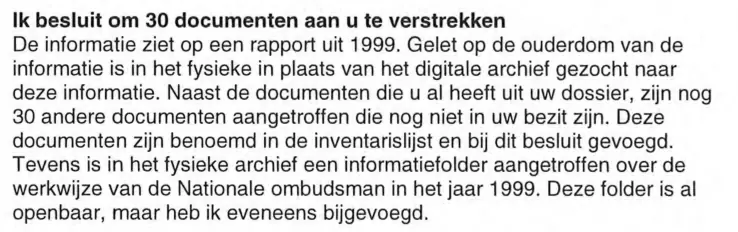

Prueba · Carta
Defensor del Pueblo de los Países Bajos, resolución Woo sobre el expediente del informe 1999/507, 7 de febrero de 2024
El pasaje
«Resuelvo facilitarle 30 documentos. La información se refiere a un informe de 1999. Dada la antigüedad de la información, esta se ha buscado en el archivo físico en lugar de en el archivo digital. Además de los documentos de su expediente que usted ya tiene, se han encontrado otros 30 documentos que aún no obran en su poder». Página 1. En la resolución, la primera frase es un intertítulo; las tres frases siguientes abren el párrafo que hay debajo. Traducido del neerlandés; el texto original figura a continuación.
Texto original
“Ik besluit om 30 documenten aan u te verstrekken. De informatie ziet op een rapport uit 1999. Gelet op de ouderdom van de informatie is in het fysieke in plaats van het digitale archief gezocht naar deze informatie. Naast de documenten die u al heeft uit uw dossier, zijn nog 30 andere documenten aangetroffen die nog niet in uw bezit zijn.” En la resolución, el intertítulo no lleva punto final. Las líneas de la imagen escaneada se han unido aquí.

Por qué importa este documento
En esta resolución del 7 de febrero de 2024, el Defensor del Pueblo de los Países Bajos (Nationale ombudsman) facilita a Giltay treinta documentos sobre el informe 1999/507 que aún no obraban en su poder. Se encontraron en el archivo físico. Giltay los había solicitado el 1 de septiembre de 2023; el 27 de diciembre de 2023, el Tribunal de Distrito de La Haya ordenó al Defensor del Pueblo que resolviera en el plazo de dos semanas, bajo apercibimiento de multa coercitiva. La resolución pide disculpas por el retraso y anuncia una comunicación aparte sobre la multa coercitiva devengada. En virtud del artículo 5.5 de la Wet open overheid (Ley neerlandesa de Acceso Público a la Información), los documentos se facilitaron únicamente a Giltay y no se hicieron públicos.
En el ensayo, esta resolución es el momento en que salió a la luz lo que había en la caja fuerte. Uno de los treinta documentos es la nota telefónica del 7 de octubre de 1999 sobre el examen de selección en Defensa, número 11 de la lista de inventario.
Procedencia
- Documento
- Resolución sobre una solicitud basada en la Wet open overheid (Woo), la Ley neerlandesa de Acceso Público a la Información
- Remitente
- Defensor del Pueblo de los Países Bajos, La Haya
- Destinatario
- E.F. Giltay, La Haya
- Fecha
- 7 de febrero de 2024, sellada
- Referencia
- 1815950
- Asunto
- «Woo-besluit» (resolución Woo)
- Referencias
- Solicitud de Giltay del 1 de septiembre de 2023 de la información subyacente al informe 1999/507
- Anexos
- 32: los treinta documentos, la lista de inventario y un folleto informativo del Defensor del Pueblo de 1999 (no incluidos en la imagen escaneada)
- Firmado
- El Defensor del Pueblo, por delegación, Hanneke van Essen, directora general
- Delegación de firma
- La resolución se considera resolución del Defensor del Pueblo, Reinier van Zutphen, que es responsable de ella
- Tachado
- El nombre y el número de teléfono de la persona de contacto, con las iniciales que siguen al número, y la firma
- Idioma
- Neerlandés
- Páginas
- 3
- Véase también
- Defensor del Pueblo de los Países Bajos sobre el expediente Giltay, 18 de mayo de 2017Tribunal de Distrito de La Haya, resolución del 27 de diciembre de 2023 (ECLI:NL:RBDHA:2023:20409)Extracto bancario de ING, multa coercitiva pagada por el Defensor del Pueblo de los Países Bajos, 16 de febrero de 2024Defensa al Defensor del Pueblo de los Países Bajos sobre Giltay, 7 de octubre de 1999
Citado en: el ensayo «La prohibición cayó, el libro quedó en pie» en el capítulo (9) «Registrado para siempre» y en la diapositiva «Tribunal de Distrito de La Haya · 2023» de la presentación «La historia en el mapa».
Ficha de prueba: https://
Documento: https://
Modificado por última vez el 10 de octubre de 2026, consultado el 27 de noviembre de 2026.

Esta página es una ficha de prueba del libro El general del encubrimiento de Edwin Giltay y del sitio web que lo acompaña.